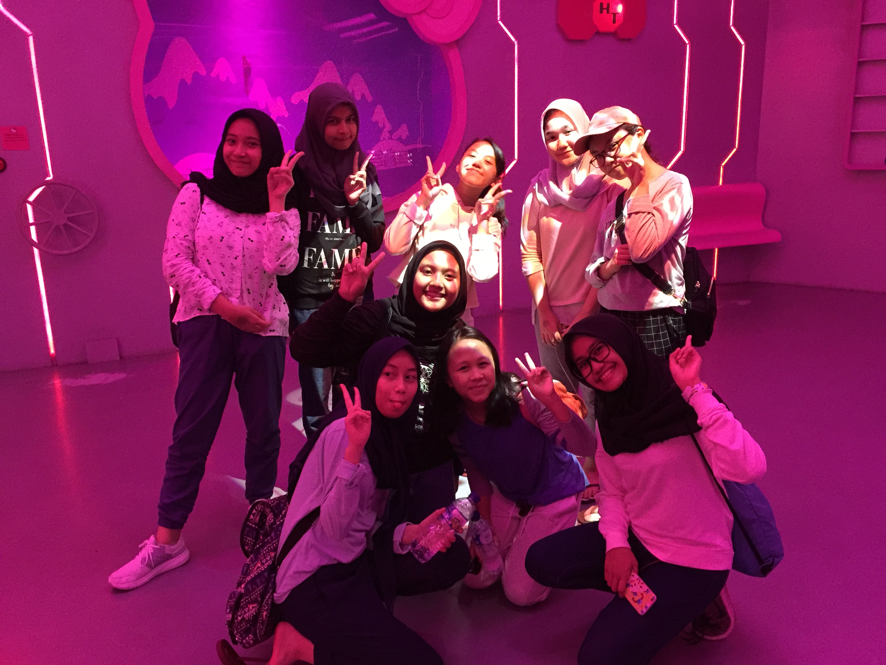
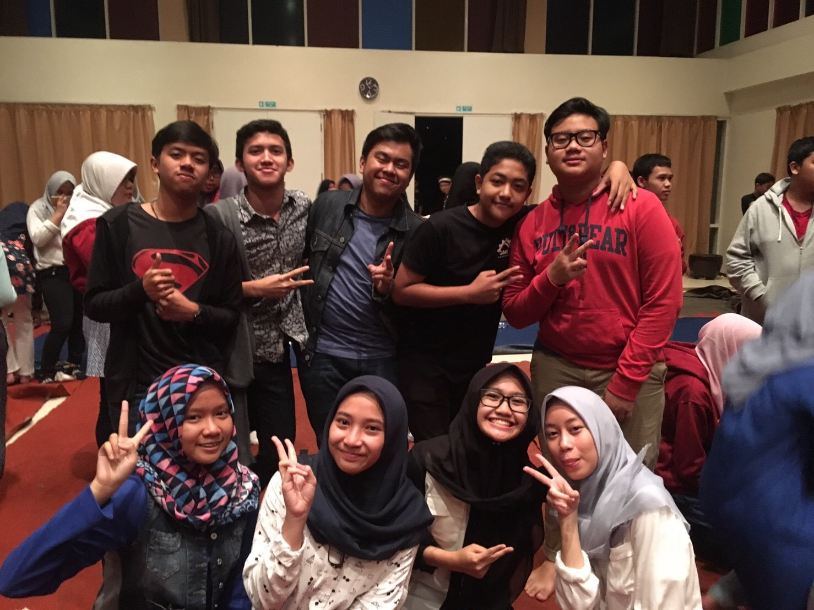
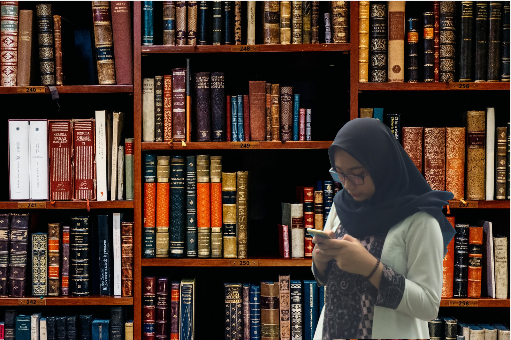
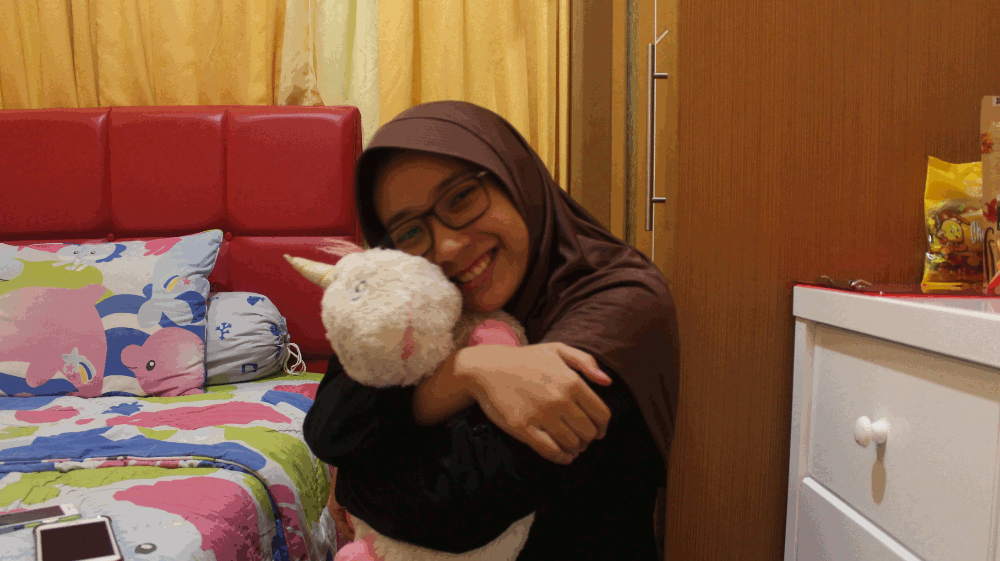

About Me

| Nama | Laras Adistya Putri |
| Kelas | 11 |
| Tempat, Tanggal Lahir | Jakarta Selatan, 8 Juni 2002 |
| Pendidikan | ABC Kids Elementary School, SMPI Al-Azhar 19, SMK-SMAK Bogor |
Halo, assalamualaikum semua! Namaku Laras Adistya Putri, biasa dipanggil Laras atau Ayas. Aku lahir di RS Asih Jakarta Selatan pada tanggal 8 Juni 2002. Aku anak pertama dari 2 bersaudara. Adikku perempuan, namanya Rianti. Dia lahir tahun 2004, beda 2 tahun 5 bulan. Aku mulai sekolah umur 4 tahun, di ABC Kids Kindergarten School. Masuk SD umur 6 tahun di ABC Kids Elementary School. Lulus SD pada umur 12 tahun di tahun 2014 kemudian lanjut bersekolah di SMPI Al-Azhar 19 Cibubur. Disana, aku masuk ke kelas Bilingual lalu bertemu dengan 9 orang teman perempuan dan 5 orang teman laki-laki yang akhirnya punya grup yang namanya Kita Strong & Beckhams.
 Setelah itu, lulus SMP pada tanggal 11 Juni 2017 kemudian melanjutkan ke SMK-SMAK Bogor pada usia 15 tahun. Inshaa Allah, setelah lulus dari sini dan bekerja, mau melanjutkan kuliah ke Universitas Indonesia atau Institut Teknologi Bandung yang entah nanti akan memilih jurusan apa, tapi, aamiin.
Hobiku adalah...
Idolaku adalah...

Ini gif sama unicorn-nya Agnes, hehe.
- Oiya, terakhir, ini ada 3 hal yang harus selalu kita pegang, yaitu :
- Faith
- Patience
- Forgiveness
Jangan pernah lupakan hal itu, ya! Wassalamualaikum!
Check out my instagram!